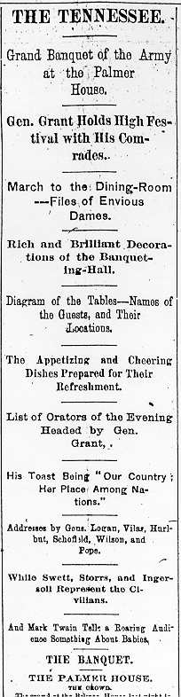

|

The Tribune's coverage of the banquet filled up three pages of the paper. As indicated in the headlines at left, the paper even published a detailed seating chart showing the places assigned to all 500 diners. The account went into equal detail about the lavish menu, which began with "Blue Point Oysters on the Shell" and a "Sauterne," and ended, many courses later, with "Celery," "Coffee," "Cognac," and "Cigars." The "weary correspondent" stayed until after 2 a.m. to take down in shorthand all fifteen speeches. MT's came last, and was not treated as more newsworthy than most of the rest. Probably the main emphasis of the Tribune's account was the "Stag" nature of the banquet. It took the reader into the dinner with a long description of "the amusing feature" of "the singular contrast" between "the stern masculinity of the line of banqueters and the almost exclusively feminine character of the groups of spectators who enclosed them on both sides" as they marched into the dining room, from which all women were excluded. "Taken altogether," the reporter said, "the sight was one which would make a woman's-right's advocate boil over with righteous indignation." If someone like Elizabeth Cady Stanton or Susan B. Anthony had been there, "she would have got points enough in ten minutes to supply the basis of half a dozen lectures on the evil and immoral tendency of that vile remnant of barbarism which mars modern civilization under the villainously suggestive name of the 'Stag party.'" When the account gets to "THE TOASTS," it picks up the theme of male saturnalia: "At 10:45 p.m. Gen. Sherman, the President of the meeting, arose and began the arduous task of quieting the tumult and general conviviality resulting from a superabundance of empty wine glasses and a plentiful supply of cigars." "Woman" was represented in the hall by the regular toast. After MT turned down the topic, it was assigned to Gen. Thomas C. Fletcher, who began: "The only real magic of nature is the power possessed by a woman over the man who loves her, -- whether it be his mother, his wife, his sister, or his sweetheart." According to this account, the biggest crowd response was produced by this line: "The fires were kept by them bright upon the altar of home for those who never came back. The flag of their country covers their mouldering ashes in the National Cemetery; and the strong fatherly arm of the Government for which they died protects their dear old mother, or their widow, or orphan children; and, comrades, while we live and they live, the Government we fought for shall continue to do so. [Cheers and applause.]" In the letter he wrote Livy hours after the banquet, MT called Fletcher's performance the "flattest, insipidest, silliest" response to "Woman" he'd ever heard. |